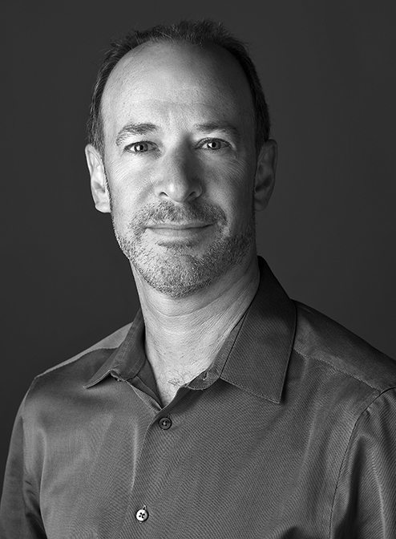
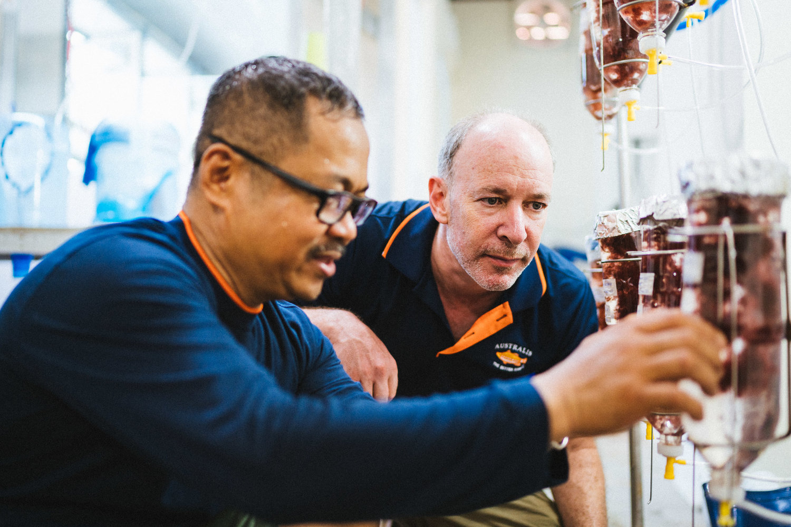

Greener Grazing is a project developing the foundational knowledge and tools needed to initiate scalable, ocean-based Asparagopsis taxiformis (“AT”) farming and support producers in rapidly building supply. The mission is to unlock the potential of this seaweed in combatting climate change, largely through the seaweed's curious ability to reduce methane production in cattle. In this chat Peter Green spent time with Josh Goldman, the founder and project lead.

What was the motivation behind creating Greener Grazing?
When I started in aquaculture, I was involved in the development of RAS (recirculating aquaculture systems) technology and integrating fish with plants in what is now called aquaponics. At a certain point along the way, I made a major shift to look at scaling aquaculture sustainably. This helped me realise that tropical aquaculture was a large, underdeveloped opportunity.
So, I brought Australis, the barramundi company, from a primarily US-RAS model to a Vietnam ocean-farming model. With that transition I investigated how to integrate seaweed. For some time we've had Kappaphycus seaweed farming as an intercrop with our rotational fallowing program. So, when we cultivate the fish, after one year we pick up the cages, move them to a different lease, and come in with submerged tube nets to cultivate Kappaphycus. That's really cool because it has some local environmental benefits, it attracts a lot of fish and has enhancement effects. However, those benefits are really local. So, when I came across Asparagopsis research indicating it's ability to reduce methane production in ruminants, I was intrigued. That's the origin story.
"I came across Asparagopsis research indicating that it had a huge impact on reducing methane production in ruminants "
What have been some of the challenges you've experienced with Greener Grazing?
There is a really big technical challenge with growing Asparagopsis. There are two possible solutions to this problem. One is growing it on land; in ponds or tanks using tumble culture.
Unfortunately, this is a very expensive pathway and is unlikely to provide the supply or cost that will drive production. So, we've taken the longer, harder, but hopefully much more interesting pathway. This involves trying to close the life cycle and produce seeded seaweed groups on land that can then be transferred to the sea. Once you get to the sea, the cost of scalability is more economical.

What's next for Greener Grazing?
At this point, Greener Grazing is a technical initiative largely around advancing the science and cultivation of this seaweed. It is not so much on how we get the product in the market. The technical challenges still have to be resolved around the process itself.
We are really trying to build a global network of collaborators which is a hard problem.
The interesting thing about Greener Grazing is that it has incredible interest and demand from the market. There's a really pronounced interest amongst beef and dairy producers to reduce the climate impacts of what they do.
What's next for the seaweed industry?
Clearly we're in the early days and the techniques aren't as refined as they need to be. Seaweed is a tremendously exciting space, both for direct food production, biofuels or carbon sequestration. There's all these ideas out there about ways that we can use it to combat climate change that are really interesting.
What advice would you give to your younger self or a young individual trying to pursue business in this field?
I think there's a lot of room for people to be bold. However, bold vision has to be married with technical acumen. I think the way that it moves forward is through the advancement of knowledge. So investing in that, building partnerships and bringing the best minds together will ensure the development of the industry.
"There's a lot of room for people to be bold"
Could you recommend some books?
Paul Greenberg's Four Fish is an amazing book about the oceans and how to think about aquaculture.

Interviewer: Peter Green